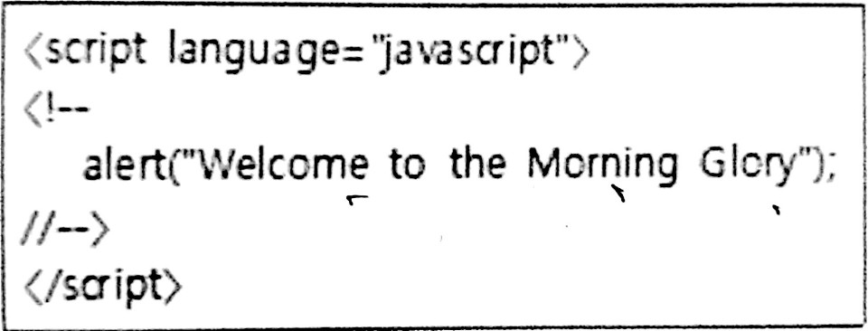
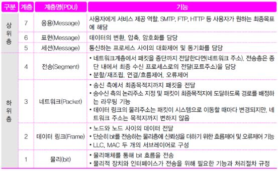
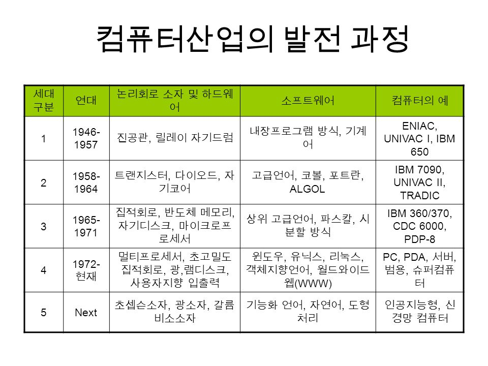

2020.03.11
브라켓 확장기능
- Emmet : 단축키
- Custom Work : 상단에 탭 메뉴 기능
- Beauty : 코드 정렬
- Indect Guide : 코딩 라인 가이드
단축키
- 복사하기 : Ctrl + C
- 붙여넣기 : Ctrl + V
- 전체 복사하기 : Ctrl + A
- 4칸 이동하기 : Tab
- 4칸 반대로 이동하기 : Shift-Tab
2020.03.12
브라켓 확장기능
- 줄 복사하기 : Ctrl + C
- 자동화 기능 : Ctrl + space
2020.03.13
브라켓 확장기능
- Entity code : 코드로 인식되어 웹에 나타낼 수 없는 것들을 표기할 수 있는 코드
float: 2000년대방식 (height값 인식 못하는 버그 있음.)clear : float을 사용했을 때 사라진 박스를 되살림. float 무효화.text-transform: uppercase: 글자를 대문자로 만들어줌.
2020.03.16
브라켓 확장기능
- 한 칸씩 이동 : Shift + 방향키
- 한 줄씩 이동 : Shift + Home
2020.03.17
브라켓 확장기능
-
width: 100%;:배경 가로크기 자율 조정 -
height: inherit;: 부모 값 상속 -
bgc: rgba(rr,gg,bb,a): a는 불투명도
2020.03.18
브라켓 확장기능
- thead: 표 제목
- tbody: 표 내용
2020.03.19
브라켓 확장기능
position: absolute;: 위치 절대값. 기재 후 (left: 100px)등 작성하여 위치 마음대로 옮길 수 있음.caption: 시각장애인들에게 설명해주는 태그- rel(relation):연결하는 대상이 무엇인지 알려주는 속성
- a:hover: 마우스 갖다 댔을 때 색 바뀜
- colgroup : 표 사이즈 묶어 한번에 설정
- id 안 id에게 속성줄 때 한번 띄우고 쓰기만 하면 됨 (ex: #skip a)
- 같은 괄호 안 속성에는 뒤에 기재된 것이 우선 적용.
기타
- 일러스트는 벡터 방식(좌표값으로 이루어진 선)
- 포토샵은 비트맵 방식(점으로 이루어진 선)
2020.03.20
브라켓 확장기능
- ../ :상위 파일로 이동할 때.
- 인라인에게 센터 주려면 부모에게.
- 인라인 구조는 padding top 설정이 안 먹히는 오류 있음.
이때,display: inline-block;이용하여 블록 성질로 변경해주면 됨.
2020.03.23
브라켓 확장기능
- oh: 'overflow:hidden;'
- last-child: 마지막 박스 선택자
- a[#], a[href="#"] : a태그 자동완성
- <a class:"##"> : a 태그에 class라는 가명을 얹어줌. CSS파일에서 이름 띄우지 않음.(a.class{})
-
list-style: none;: 블릿기호 초기화
2020.03.24
브라켓 확장기능
- poa: position: absolute;
- 위치 지정시 단위(px)를 적지 않으면 작동X
aria-hidden="true": 웹접근성을 위한 코드이다. 같은 이름을 적어야 하는 상황에 중복 인식되므로 한 값의 이름을 바꿔주는데, 그때 바꾼 이름을 인식하지 않고 본래의 것을 인식하라는 의미.
2020.03.25
브라켓 확장기능
- 이미지 태그에서 의미 없는 이미지일 경우 alt라고만 표기하면 시각리더기가 읽지 않음. 장식용 이미지라 인식.
- 목록형 태그 안에는 제목태그, p태그 위치 불가.
position: 원하는 위치로 옮길 수 있으나 영역이 사라짐.
웹디자인 기능사 기출문제 오답풀이 (2015년 07월 19일분)
| 1.색의 3속성 중 사람의 눈이 가장 예민하고 강하게 반응하는 대비는? | 명도대비 |
| 3.디자인의 원리 중 비례에 대한 설명이 잘못된 것은? | 균형을 가장 많이 고려하여 구성해야 한다. |
| 7.먼셀의 색체계에서 색상의 기본색을 10가지로 나누었을 때 포함되지 않는 색은? | PR -먼셀은 빨강(R), 노랑(Y), 초록(G), 파랑(B), 보라(P)의 5색을 기준으로 하고, 이들 사이에 청록(BG), 청자(PB), 자주(RP), 주황(YR), 연두(GY)를 삽입하여 10색상환을 만들었다. |
| 9.가시광선에 대한 설명으로 틀린 것은? | 라디오나 텔레비전, 휴대폰의 파장범위를 모두 포함 한다. - 전파는 가시광선에 포함되지 않는다. |
| 11.자연에서 쉽게 찾을 수 있고, 온화함이 있지만 때로는 단조로움을 주는 디자인은? | 유사조화 |
| 12.다음 중 LCD, LED 조명등에 활용되는 색의 혼합방식은 무엇인가? | 가산혼합 -가산혼합이란? :삼원색을 이용하여 색을 표현하는 방식. 색을 혼합하며 색을 섞을수록 밝아진다. |
| 18.2차원적 제품 디자인 분야에 속하지 않는 것은? | 편집디자인 -편집디자인은 2차원 시각디자인에 속한다. |
| 19.디자인 의미에 대한 설명으로 틀린 것은? | 도안 또는 의장을 말하며, 주어진 목적에 관계없이 비실체적인 행위의 총체이다. |
| 21.HTML에서 사용되는 글자 모양에 관련된 태그에 관한 설명으로 옳지 않은 것은? | <SUB> 태그는 위 첨자 모양의 글자로 표시할 때 사용하는 태그이다. -<SUB>태그는 아래첨자를 넣을 때 쓰이며, <SUP>태그가 위 첨자를 넣을 때 사용된다. |
| 23.인터넷 익스플로러 버전을 확인하고자 할 때 선택해야 할 메뉴는? | 도움말 |
| 24.다음 중 인터넷 서비스에 해당되지 않는 것은? | PDA -Personal Digital Assistant는 개인용 디지털 단말기로 터치 스크린을 주 입력장치로 사용하는 작고 가벼운 컴퓨터를 말한다. |
| 26.전자메일 서비스에 연관된 프로토콜이 아닌 것은? | NNTP -Network News Transfer Protocol, 네트워크 뉴스 전송 프로토콜은 뉴스 서버 간에 유즈넷 뉴스 기사(netnews)를 전송하고 최종 사용자 클라이언트 애플리케이션에 의해 기사를 구독, 게시할 수 있게 하기 위한 애플리케이션 프로토콜이다. |
| 29.수신된 신호를 증폭, 회복시켜 재전송하여 전송거리를 확장하는 네트워크 장비는? | Repeater -Routwe는 패킷의 위치를 추출하여, 그 위치에 대한 최적의 경로를 지정하며, 이 경로를 따라 데이터 패킷을 다음 장치로 전향시키는 장치(중계 장치). -Gateway는 다른 네트워크로 들어가는 입구 역할을 하는 네트워크 포인트이다. |
| 31.여러 개의 검색엔진에서 정보를 찾은 다음, 중복으로 검색된 정보는 하나로 통일하고 자체 순위 결정 방식에 의해 가장 관련성이 높은 순으로 출력해 주는 것은? | 메타 검색엔진 |
| 32.<BODY> 태그에서 사용할 수 있는 속성과 그 의미의 연결이 올바르지 않은 것은? | BG - 배경으로 사용될 이미지 파일을 지정한다. |
| 33.다음과 같은 자바스트립트 소스를 헤드 태그 안에 삽입 시 브라우저에서 적용되는 결과는?  |
페이지가 열릴 때 자동으로 Welcome to the Morning Glory라는 문구가 있는 메시지 창이 뜬다. |
| 35.정보 검색 연산자의 설명으로 옳은 것은? | OR : 연산자 좌우 검색어 중 하나라도 들어 있는 자료를 찾는다. |
| 36. 웹 페이지 속도 향상을 위한 이미지 관리로 맞는 것은? | 썸네일을 활용한다. |
| 37.OSI 7계층에 해당하지 않는 것은? | 관리 계층  |
| 38.HTML을 이용하여 테이블을 작성할 때 테이블 내부의 선의 두께를 정의하는 속성은? | cellspacing |
| 39.웹 페이지 저작 도구 중 위지윅 기반의 웹 에디터가 아닌 것은? | 홈 사이트 |
| 41.웹 페이지 제작 시 사용되는 네비게이션 구조의 유형에 해당하지 않는 것은? | Protocol structure |
| 42.컴퓨터 그래픽스의 발달과정 중 세대별 발전단계가 바르게 연결된 것은? | 제 4세대 - 고밀도 집적회로, 래스트 스캔 CRT  |
| 43.애니메이션 종류 중 배경은 그대로 두고 캐릭터만 움직이도록 하는 기법으로 투명 필름 위에 수작업으로 캐릭터를 채색한 후 배경 위에 놓고 촬영 및 편집하는 기법은? | 쉘 애니메이션 |
| 44.웹 사이트 제작에서 사용자 인터페이스 설계 시 고려사항으로 틀린 것은? | 웹페이지에서 다른 곳으로 이동 할 수 있는 링크를 한 곳으로만 지정될 수 있도록 설계한다. |
| 47.컴퓨터 그래픽스 시스템의 출력장치에 대한 설명으로 틀린 것은? | 대표적인 출력장치로 프린터, 모니터, 디지타이저 등이 있다. |
| 49.다음 중 웹사이트 개발과정에 대한 설명으로 틀린 것은? | 웹 사이트 구축 - 테스트 및 디버깅 -디버깅(debugging)은 컴퓨터 프로그램이나 시스템의 정확성 또는 논리적인 오류나 결함(버그)를 검출하여 제거하는 과정이다. 기획-디자인-개발-구축(완성) 단계에서 개발단계에 속해야한다. |
| 50.고해상도의 원본 이미지의 포맷을 변경해서 저장하였을 경우 다음 중 파일용량이 가장 큰 것은? | GIF |
| 51.웹 사이트의 가상경로를 예상하여 기획하는 것으로 웹 사이트의 설계도이며 구체적인 작업 지침서 역할을 하는 것은? | 스토리보드 -시안은 시험으로 또는 임시로 만든 계획이나 의견이고, 스토리보드는 기존의 생각, 아이디어, 컨셉등을 좀 더 발전시켜 세부묘사를 한 것이므로 답은 스토리보드이다. |
| 55.다음 중 그래픽 표현 방식에서 벡터 방식에 대한 설명이 아닌 것은? | 비트맵이미지에 비해 상대적으로 파일 용량이 크다. |
2020.03.26
브라켓 확장기능
- CSS에 중괄호 안 쓰면 에러남.
- CSS 플레임웍: 커스텀 템플릿(bootstrap https://getbootstrap.com/)